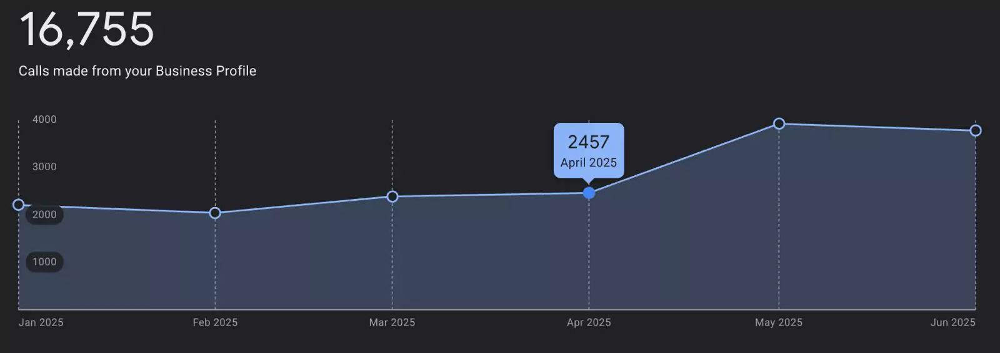
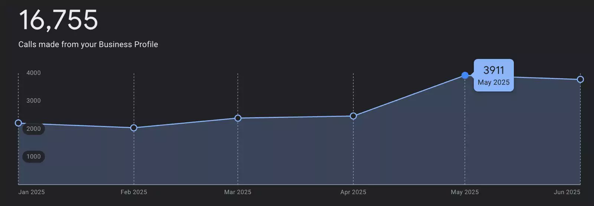

მიუხედავად იმისა, რომ ცნობილი ბრენდი იყო, პრაქტიკულად უჩინარი იყო ონლაინში. ლოკალური SEO-ს წყალობით — Google My Business ოპტიმიზაცია, სერვისების სტრუქტურიზაცია, კონტენტ სტრატეგია.
მიუხედავად იმისა, რომ ცნობილი ბრენდი იყო, პრაქტიკულად უჩინარი იყო ონლაინში. ვებსაიტზე ვიზიტორები მხოლოდ კომპანიის ზუსტი სახელით ძებნისას შემოდიოდნენ. ზოგად სერვისულ ტერმინებზე პოზიციები არ ჰქონდა. Google My Business პროფილი მინიმალური იყო.
Google My Business ოპტიმიზაცია პირველ ეტაპზე (ყველაზე სწრაფი გზა ზარების გასაზრდელად). GMB პროფილის დახვეწა — სერვისების კატეგორიზაცია, ყველა ველის შევსება, აღწერების განახლება. მაღალი ხარისხის ფოტოების დამატება.
სერვისის სტრუქტურის აგება ნულიდან — თითოეულ სერვისს ცალკე ოპტიმიზებული გვერდი. მეტა სათაურების და აღწერების გამოსწორება შესაბამისი ქივორდებით. სერვისის გვერდებზე კონტენტის დამატება.
დეტალური ქივორდ კვლევა და კონტენტ სტრატეგია. შიდა ბმულების სისტემა. ბლოგს ახალი სტრატეგიული ფუნქცია მიენიჭა — FAQ-სტილის სტატიები, შიდა ბმულები სერვისის გვერდებზე.
რეალური მომხმარებლების პოზიტიური მიმოხილვების მოზიდვა. რეპუტაციის მართვა და კლიენტებთან ურთიერთობა.
+60% ზარების ზრდა, 1,500-მდე დამატებითი ზარი Google პროფილიდან, +370 კლიკი, +20,000 იმპრესია, 2 თვეში:



მოითხოვეთ უფასო SEO აუდიტი და გაიგეთ თქვენი საიტის პოტენციალი